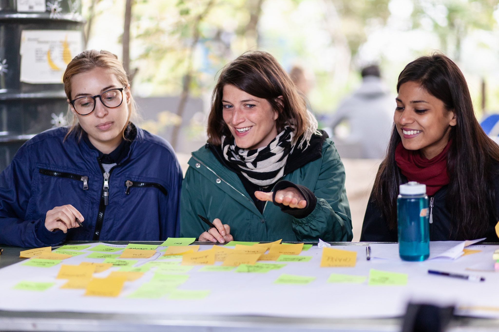

Radical Civic Design: Creating experimental spaces to explore possible alternatives
Working with communities to codesign and speculate societal transistions that solve wicked problems
Project Overview
Radical Spaces Lab is a participatory design project that delivers research and workshops focused around creating civic agency through investigative codesign and experimental methods. The project creates investigative design tools to interface with complex issues and systems in society, creating critical insight and imagining possible alternatives. Our work focuses on four core aims:
Social action through civic imagination
The core focus of the project is to use design to empower people to have more agency and understanding in wider societal systems, explore power relations and speculate alternatives. By enlisting communities as designers we can create new forms of participatory action through design.
Foster critical Inquiry
Critical Inquiry is a key investigative tool to understand and deconstruct our surrounding systems and experiences. By fostering an environment of investigation, teaching critical perspectives participants have the necessary tools for insight.
Create experimental approaches
Fundamentally we are interested in creating new experimental methods and pedagogical approaches to design, building a design literacy that is robust, experimental and engages with critical issues. By fostering an environment of experimentation we aim to create new processes of discovery and analysis.
Speculate alternatives
We use design as a tool to imagine alternatives and pluralities to the normative systems that govern the everyday. Through using design as a means for imagination communities can better shape and inform new ways of innovative approaches to domains such as policy, technology and the environment.
Reimaging alternatives with communities
How can design engage with societal challenges in meaningful ways? What types of tools can we employ to engage with these challenges and the environments produced by wicked problems? To answer this question, throughout 2018-19 I ran a series of civic workshops with the public across Europe to reimagine social design practice in new and innovative ways.
Participants explore the dimensions of scenarios in participatory sessions
Our first workshop ‘Radical Ecologies’, held as part of retune festival 2018 explored how participatory design can be used as a method to engage communities to think critically about systems of scale and imagine new alternatives. Using methods from systems analysis, critical thinking and speculative design participants deconstructed and reimagined complex environments, investigating system layers and co-designing responses. In the first stage of the workshop participants used systems mapping to speculate on topologies of the topic, mapping different actors and forces at play. After mapping system elements, groups generated artifacts critically exploring the values of the imagined spaces.
Systems map speculating a political ecology around plant based information systems.
Speculative objective designed as part of exploring food systems.